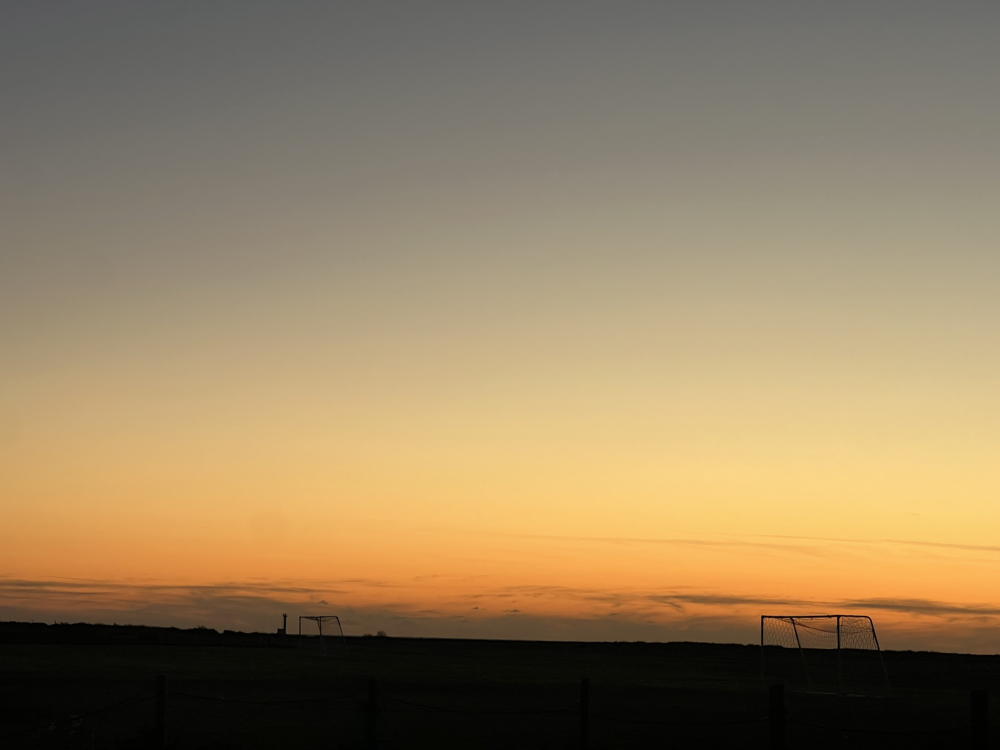
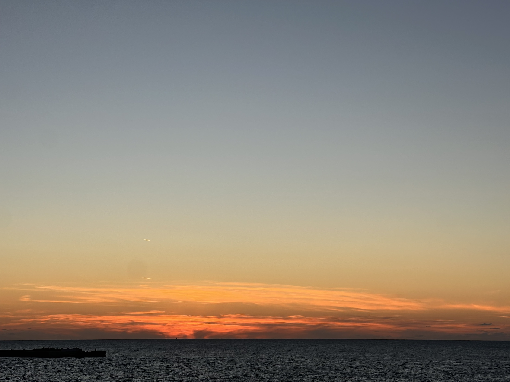
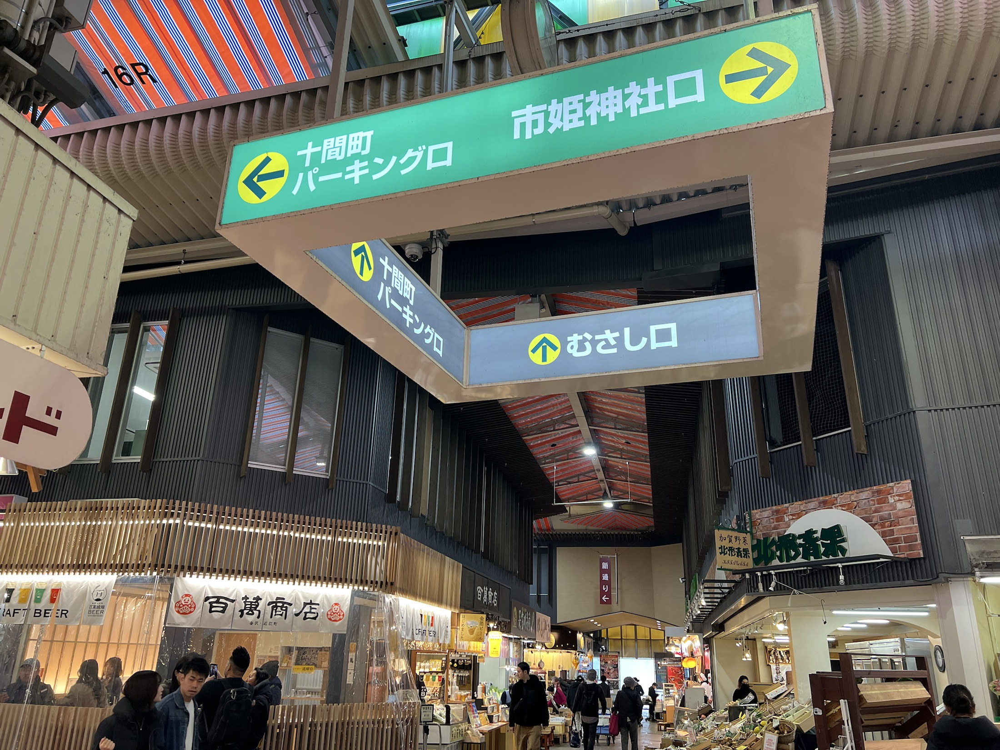
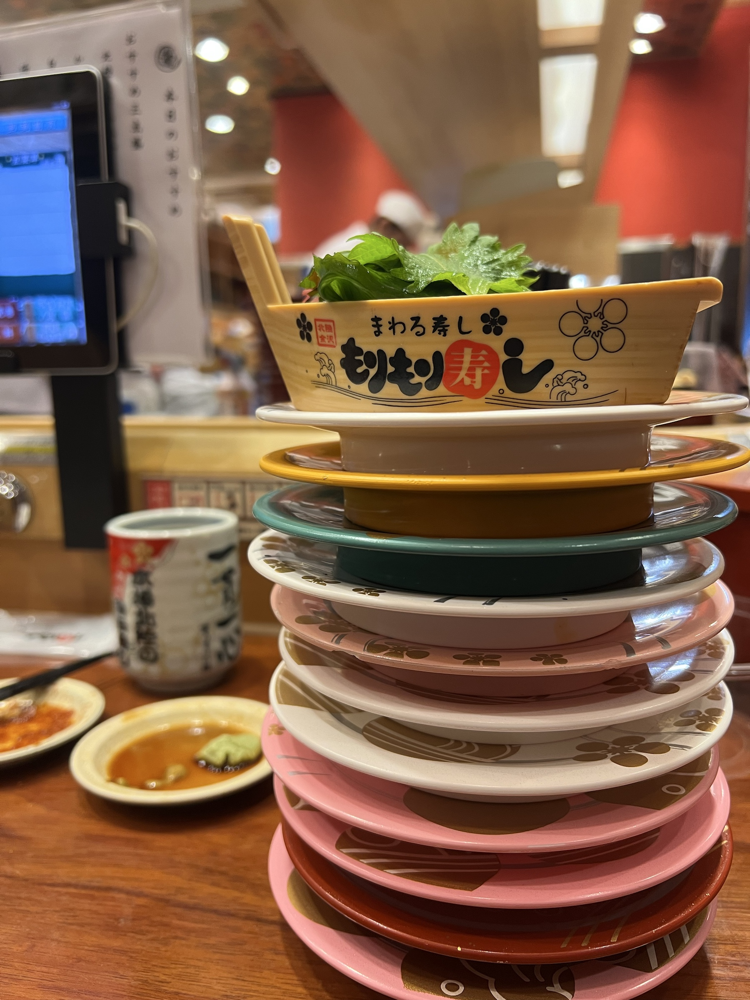
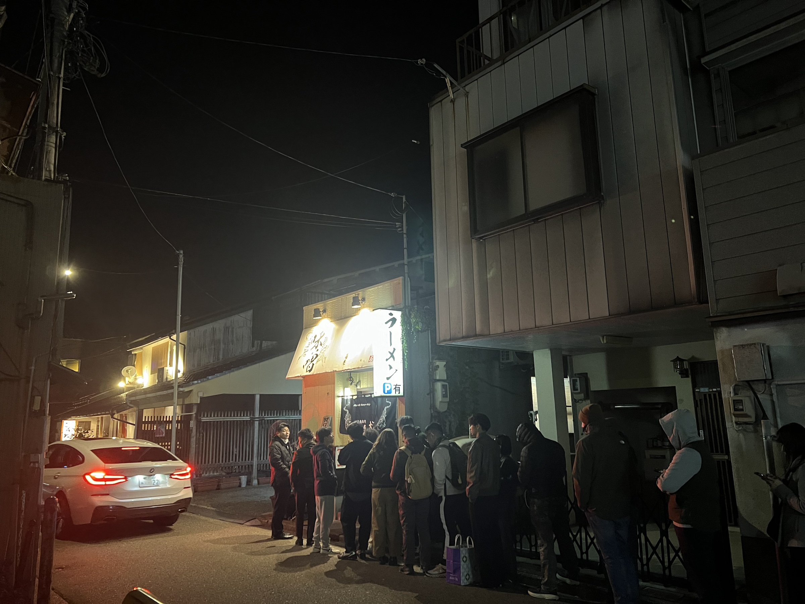
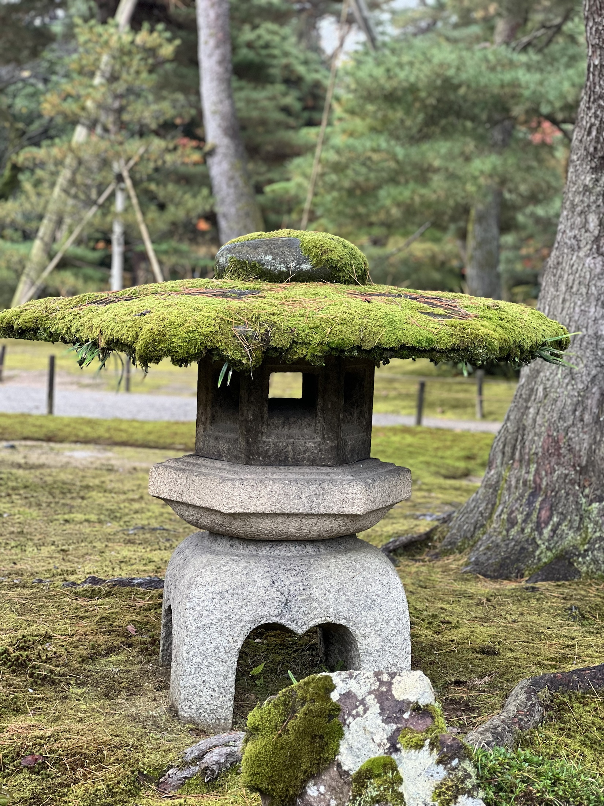
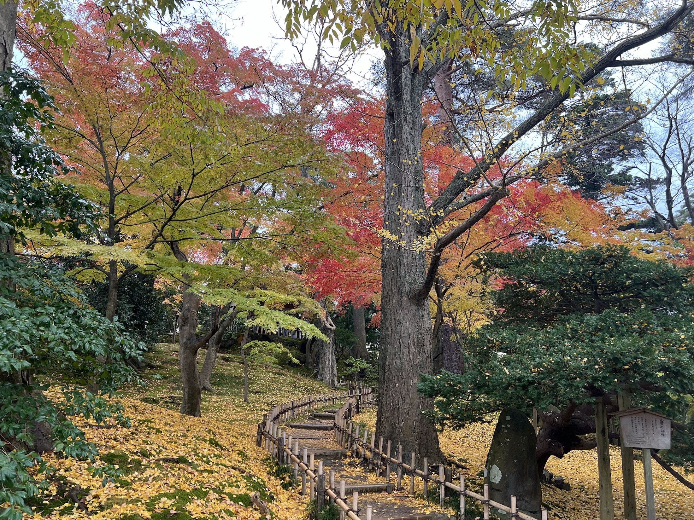
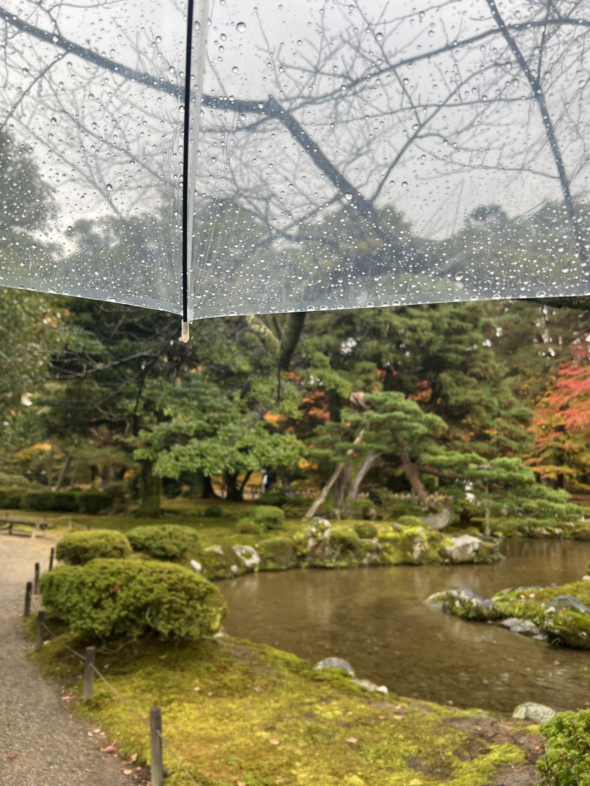
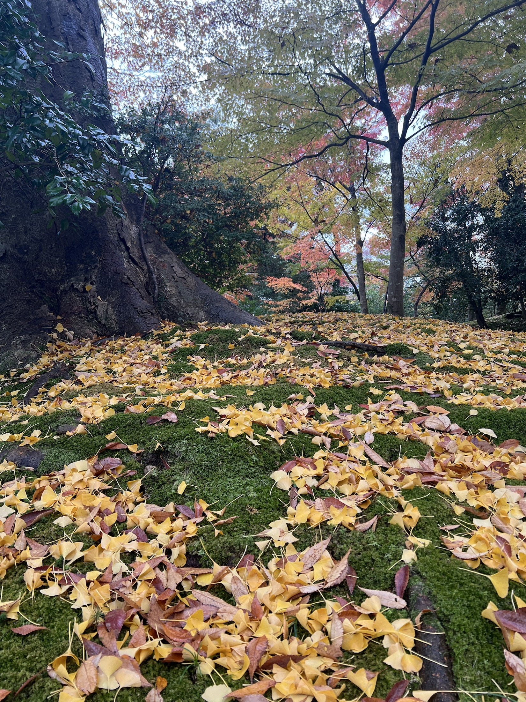
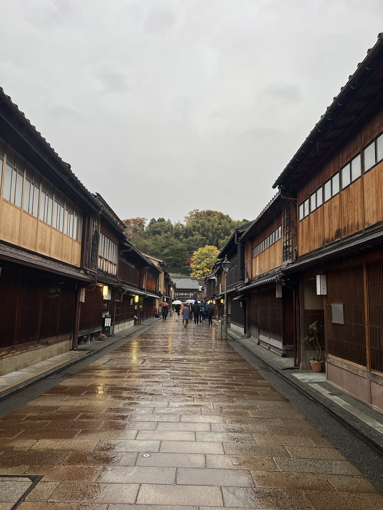

从高山坐车去金泽，像是慢慢走进日本北陆。
山地的气息还没有完全散去，车窗外的景物已经开始变得平缓。日本的城市常常不是突然出现的，而是一点一点从秩序里长出来：道路、车站、屋顶、招牌、停车场，都不声张，却把一个异乡人的脚步接住。
我就是在这样的平静里抵达金泽的。

抵达之后，我习惯性的先去游客服务中心，咨询哪里适合看日落。
两位五十岁左右的阿姨听了，明显有点惊喜。一个外国游客刚到这里，不问兼六园，不问近江町市场，却问哪里能看夕阳，这个提议大概有些小众。她们笑着说，这个想法很好，然后给我推荐金石海滩，又仔细告诉我应该坐什么车，在哪里下。
一个刚到异乡的人，最容易被这种热情鼓动。原本只是随口一问，忽然就像得到了一项温柔的任务：今天傍晚，要去海边看一场金泽的日落。
计划有了，我便准备先去酒店办理入住。把行李放下，再轻装出行，时间原本是从容的。
就在这时，平静突然断了一下。
行李呢？
我快速地把刚才的经历在脑子里倒带：下车，进站，去游客中心，问日落路线。没有任何一个画面里出现过我的箱子。答案很快浮上来，也让人心里一沉：它应该落在从高山开来的大巴车上。
旅行中最让人不安的，往往不是远方，而是远方里的一个小失误。衣物、证件、后面的车票、语言环境、已经开走的大巴，会在几秒钟里一起压过来。
我先赶回刚才下车的地方，想看看那辆大巴还在不在。站台空着，车已经开走了。
我向旁边一辆大巴车上的司机求助。他英语不好，我的日语也谈不上从容，但他没有把我推开，而是把我带到旁边一个巴士公司的售票点。有意思的是，那还不是我乘坐的那家大巴的公司。
售票点里有一位大约六十岁上下的男人，神情严肃，不太像会说安慰话的人。他听完我的描述，开始打电话。一个电话不够，又打另一个。没有过多表情，也没有多余寒暄，只是把事情一点点往前推。最后查到，那辆车已经开到别的停车场休息，大约一个半小时后会回到金泽站。到时候，我可以去取回行李。
我站在那里，心里松了一下。许多人说日本人有距离感。那天我忽然觉得，距离感并不等于冷漠。平时他们不轻易打扰别人；但当你明确求助，里面的人会认真地把门打开。那位严肃的大叔没有一句动听的话，却把一个旅人的慌张安放好了。
这样一来，海边日落计划忽然变得紧了。
行李算是有了着落，时间却被吃掉了一大块。等车回站、取回箱子、去酒店办入住，再赶往金石海滩，原本从容的一段傍晚，忽然变成了和天色的赛跑。
我去等公交，才发现自己对日本交通的想象过于整齐。电车和新干线常常准得令人放心，但城市公交并不总是如此。那天车比站牌上的时间晚了七八分钟。后来想想，那正是晚高峰，公交当然会受路况影响。日本不是由秒针统治的神话国度，它也有拥堵、延误和日常生活的误差。
下车时，太阳已经贴近地平线。我跟着导航一路小跑。
通往海边的路并不浪漫。那里有一大片野球场和开阔的运动区域，平日傍晚，几乎看不到什么人。我一边跑一边想，日本足球强，也许不是偶然。一个国家的体育，不只在赛场上，也在这些无人赞美的空地里，在孩子们每天可以抵达的草地和球门旁。

终于到了海边，却发现它并不是我想象中的沙滩，更像一处小山般的高台。风从海上来，天色正在迅速暗下去。我还是赶上了落日的尾巴。

一个人看夕阳，常常比一群人看更接近夕阳本身。
那不是网红机位，没有排队，没有兴奋的呼喊。只是天空把最后一点光放在海面上，像是给迟到的人留了一小块位置。我站在那里，忽然觉得，前面那些慌乱都没有白费。这个迟到的夕阳，反而让金泽从一开始就有了记忆。
金泽的酒店，是我后来反复想起的另一个教训。
我当时为了性价比，选了一家离车站大约八百米的商务酒店。地图上看，不过十五分钟步行，似乎很合理。可真正拖着行李走起来，才发现车站附近的道路并不算平整，路面起伏、接缝和坡度都会被箱轮放大。八百米对空手的人不算远，对拖着箱子的人，就会显得格外长。
从那以后，我对酒店位置有了更实际的标准：带长辈出行，离车站步行路程最好控制在十分钟以内。拖着行李多走的那几百米，很容易变成旅途中的无谓消耗。
第二天一早，我特意赶在九点开门时去了近江町市场。

我按中国经验想，菜市场总是越早越热闹，开门那一刻应该最有生活气。可到那里才发现，最好的时间也许是十一点以后，接近饭点，海鲜、餐饮、人流和摊位才真正热起来。
有一家旋转寿司倒是一早就开始排队。我也排了。
店门口有一个自动取号机，两位日本老太太站在那里研究了半天，没有弄明白。旁边也有本国年轻人，但没有人主动上前。我看了一会儿，终于忍不住过去帮她们取了号。两位老太太连连致谢，我反倒不好意思起来。
那顿寿司的味觉记忆并不浓烈，反而是那台取号机前的几分钟留了下来。

旅行常常这样。我们以为自己会记住餐厅，结果记住的是排队时一个眼神。我们以为城市靠名胜让人记住，结果真正留下来的，是人与人之间一次笨拙而善意的连接。
从近江町市场出来，我往兼六园方向走。
路上正赶上午饭时间，一些小店门外排着整齐的队，多是附近上班族。前一天晚上，我路过一家面馆，也见到门口排了许多人。夜里将近十点，没有板凳，队伍却仍安静地延伸着。日本的秩序，有时候不是宏大的制度，而是一个个普通人愿意在小事上遵守的队形。

尾山神社、金泽城，我都只是匆匆看过。真正停留的，是兼六园。
兼六园门票三百二十日元，折合人民币十几块钱。这个价格让人几乎有些感动。深秋时节，园中红叶很多，水面、松枝、石灯笼，都在一种克制的美里。

但作为中国人看兼六园，很难不想到江南园林。
苏州园林的曲折、借景、藏露、一步一换，比起兼六园来，确有另一种精微。兼六园的美，更开阔，也更端正。它不是让人迷路的园林，而像一篇结构清楚的文章。
后来我才知道，“兼六”这个名字本身就和中国古代园林观念有关。它讲的是理想园林要兼具六种美：宏大与幽邃，人力与苍古，水泉与眺望。这套说法出自北宋李格非的《洛阳名园记》。（李格非还有一个更为人熟知的身份，他是李清照的父亲。）“兼六”二字，说到底，就是把看似互相矛盾的东西放在同一座园林里：既要开阔，也要幽深；既要人工经营，也要古意天然；既要有水，也要能远望。

金泽和苏州是友好城市，这也很耐人寻味。
两座城市都不靠喧闹取胜。它们都有园林、老城、工艺和缓慢形成的生活审美。不同的是，苏州更像文人案头的一方山水，金泽则带着城下町的气质，有武家的端正，也有工艺的细腻。
江户时代的金泽，是加贺藩前田家的城下町。前田家富有，却长期把力量投向茶道、能乐、工艺和学问。文化在这里不是装饰，而是慢慢沉淀出来的性格。
更深处，还有汉学、儒学、禅宗这些东亚文化的水脉。
金泽出生的铃木大拙，把 Zen 介绍给英语世界。中国人听到这个故事，会有一种微妙的回望。Zen 是日语里的“禅”，而日本禅宗又深受中国禅宗影响。文化在东亚之间往返，最后又被翻译给西方。于是，一座日本海边的城市，忽然和中国、印度、欧美都发生了隐秘的联系。
旅行若只是拍照，就会错过这些暗线。
你站在兼六园里，看见的是松树和池水；再往深处看，便会看见中国园林观念的影子、加贺藩的文化政策、苏州与金泽的遥相呼应、禅从中国到日本再到世界的流动。一个景点，原来不是一个点，而是一条线。
兼六园真正打动我的，却仍是两件小事。
第一件，是一把伞。
进入兼六园时，天色已经有些不稳。我看见售票处门口有一个篮子，里面放着许多伞，便问能不能借用。工作人员说，当然可以。等雨停以后，在公共车站或类似的伞篮里还掉就行。
我拿着那把伞进了园。
游园的时候，果然下起雨来。雨中的兼六园，红叶和松枝都被洗得更沉一些，池水也暗下来。那把伞没有什么特别的样式，却让人觉得安心。等我游完出来，雨已经停了，我便顺手把伞还回了篮子。


第二件，是一个水杯。
离开兼六园以后，我继续往东茶屋街方向走。走到东茶屋街时，才发现水杯不在身边。

我的脑子再一次快速倒带，想起自己在售票处附近为了盖章停留过。最有可能丢在了那里。我决定回去碰碰运气。
回到兼六园售票处时，已接近关门时间。我看到里面还有工作人员，便试着去问。对方拿出一本失物登记册，询问颜色，核对以后，让我填写领取卡，再把水杯还给我。
手续并不繁琐，却让人感到一种可靠。
我从售票处把水杯拿回来时，忽然觉得，这座城市的美，不只在红叶和园林，也在这些默认的信任里。
一个地方的文明，未必总在博物馆里展出。它也可能藏在失物登记册上，藏在雨天的一只伞篮里，藏在帮陌生人打电话找行李的售票窗口后面。
后来我回想金泽，发现自己记住的并不是一条完美路线，而是一些小小的失序。
丢行李时的慌张，严肃大叔打电话的背影，游客中心阿姨听到“日落”二字时的鼓励，晚点的公交，一个人在海边赶上的夕阳，取号机前两位老太太的笑，兼六园的红叶、水杯和共享伞。
这些都不是传统意义上的景点，却让金泽从一座“去过的城市”，变成一座“发生过事情的城市”。
旅行最珍贵的地方，也许正在这里。它让我们在陌生的地方出一点小错，再从陌生人的帮助里恢复秩序；它让我们在日落前奔跑，再在海边承认计划永远赶不上天色；它也提醒我，真正好的行程，不是把景点塞满，而是给人、给时间、给意外，留出可以呼吸的空地。
所以我后来越来越相信，适合家庭和中老年同行的旅行，不该追求“多去几个地方”。它应该少一点慌张，多一点从容；少一点打卡，多一点看见。
金泽并不是一座第一眼就让人惊呼的城市。它更像一位有分寸的老人，不主动讲太多，等你在它那里丢过东西、借过伞、赶过车、看过夕阳，才慢慢露出自己的性格。
而我，也正是在这些小小的失序与重新归位之间，真正记住了它。
关于我
我是王龙，专注慢旅行路线规划与陪同出行。分享真实旅途见闻，也帮您和家人设计从容安心的旅程。
如果你也想带父母、家人或朋友走一趟不赶路、不踩坑的旅行，可以通过首页的咨询方式联系我。